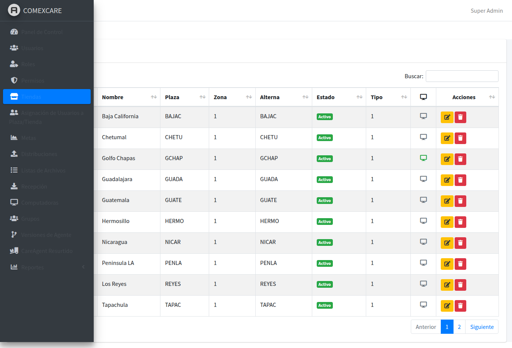
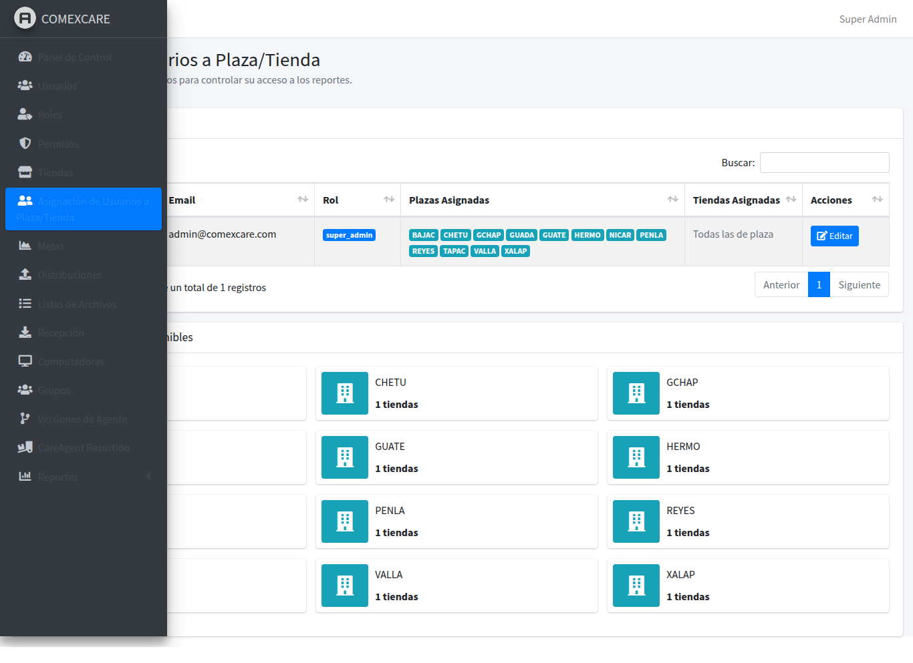
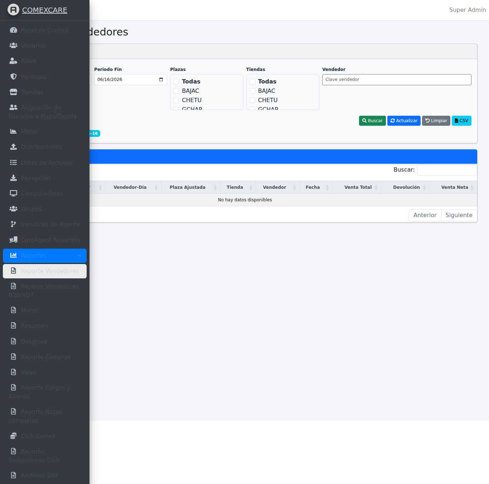
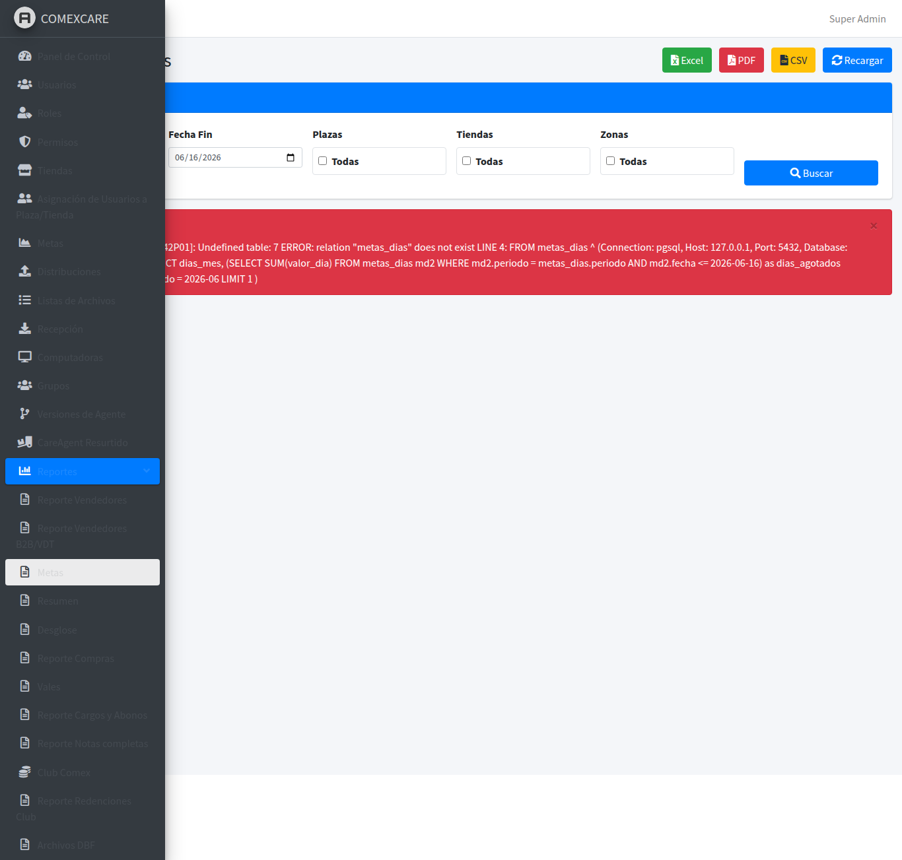
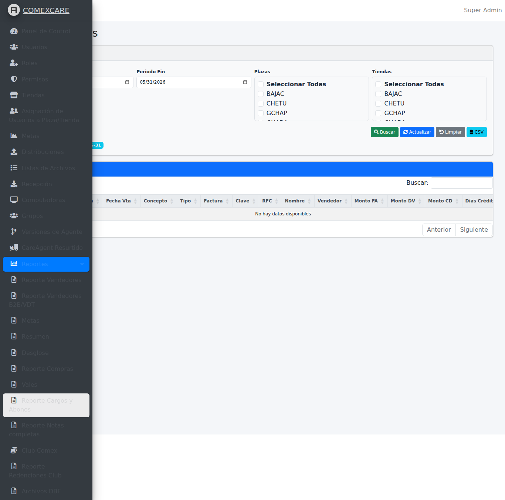
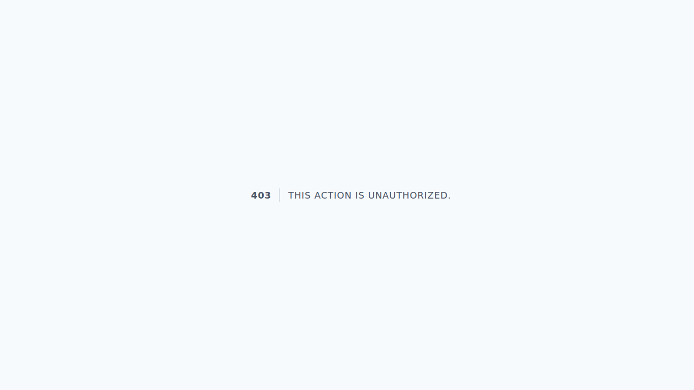
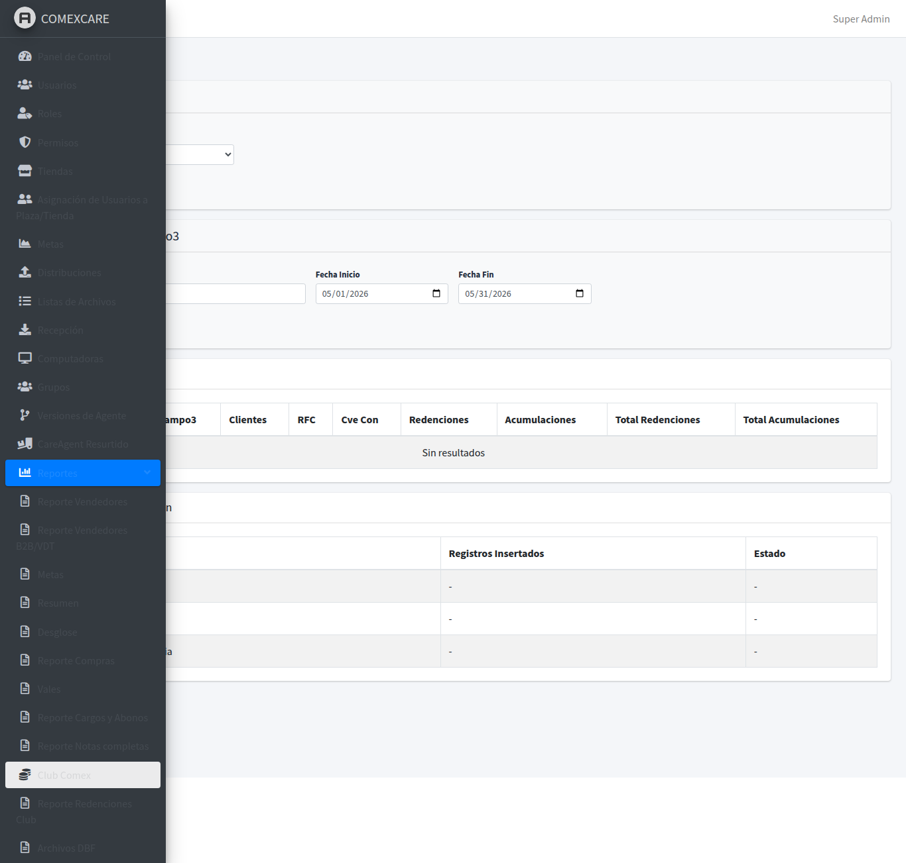

🔐 Inicio de Sesión
Para acceder al sistema, abre tu navegador y ve a la dirección del servidor. Se mostrará la pantalla de inicio de sesión.

- Ingresa tu correo electrónico (el que te proporcionó el administrador)
- Ingresa tu contraseña
- Haz clic en el botón "Iniciar sesión"
📊 Dashboard
Después de iniciar sesión, verás el panel principal con un resumen general del sistema.

El dashboard muestra información clave como:
- Computadoras en línea / fuera de línea — Estado actual de los agentes
- Distribuciones activas — Transferencias de archivos en progreso
- Recepciones pendientes — Archivos por recibir desde las tiendas
- Alertas recientes — Notificaciones importantes del sistema
👥 Gestión de Usuarios
Desde aquí puedes administrar todos los usuarios del sistema.

¿Qué puedes hacer?
- Crear nuevos usuarios con correo y contraseña
- Editar información de usuarios existentes
- Activar / desactivar cuentas de usuario
- Asignar roles (Admin, Supervisor, Consultor, etc.)
- Filtrar por nombre, correo o rol
🔑 Roles y Permisos
Controla qué puede hacer cada usuario mediante roles y permisos.


El sistema usa permisos detallados (ACL) para controlar el acceso a cada funcionalidad:
- Roles: Admin, Supervisor, Operador, Consultor, etc.
- Permisos: Ver reportes, administrar equipos, gestionar usuarios, etc.
- Cada rol puede tener múltiples permisos asignados
🏪 Catálogo de Tiendas
Gestiona el catálogo de tiendas (sucursales) donde están instalados los agentes.

Cada tienda tiene:
- Clave de tienda — Identificador único
- Nombre — Nombre comercial de la sucursal
- Plaza — Región o ciudad donde se ubica
- Zona — Agrupación geográfica
- Tipo — Clasificación de la tienda
📌 Asignación de Tiendas a Usuarios
Permite restringir qué tiendas puede ver cada usuario en los reportes.

Un usuario con asignación de tiendas solo verá datos de las plazas/tiendas que tenga asignadas.
💻 Inventario de Computadoras
Lista completa de todos los equipos registrados en el sistema (agentes instalados en tiendas).

Cada computadora muestra:
- Nombre del equipo y Short Key (identificador único)
- Dirección IP y MAC address
- Estado: En línea / Fuera de línea
- Versión del agente instalada
- Grupo al que pertenece
- Sistema operativo (versión de Windows)
- Estado de BitLocker
- Último heartbeat — última conexión reportada
📂 Grupos de Computadoras
Organiza las computadoras en grupos para facilitar las distribuciones y la administración.

Los grupos permiten:
- Enviar distribuciones a un conjunto de equipos a la vez
- Organizar por región, tipo de tienda, o cualquier criterio
- Cada grupo tiene una Short Key que los agentes usan para registrarse automáticamente
📤 Distribuir Archivos a Agentes
El módulo de distribuciones permite enviar archivos (actualizaciones, binarios, configuraciones) a una o varias computadoras remotas.

¿Cómo crear una distribución?
- Haz clic en "Nueva distribución"
- Asigna un nombre descriptivo
- Selecciona el tipo (Archivos, Actualización, Comando, PVSI)
- Elige los archivos a distribuir
- Selecciona las computadoras destino (o grupos completos)
- Configura la programación (inmediata, programada, recurrente)
- Haz clic en "Guardar"
Puedes monitorear el progreso en tiempo real:
- Pendiente — Esperando ser procesada
- En progreso — Transfiriendo archivos
- Completada — Todos los destinos recibieron los archivos
📥 Recibir Archivos desde Agentes
Las recepciones permiten recolectar archivos desde las computadoras remotas (reportes de ventas, DBF, logs, etc.).

- Crear una nueva recepción especificando qué archivos recolectar
- Seleccionar las computadoras origen
- Configurar la programación (diaria, semanal, etc.)
- Los archivos recibidos quedan disponibles en el servidor
🔄 Versiones de Agente
Gestiona las versiones del software agente instalado en las computadoras remotas.


Hay dos tipos de agente:
- Agente de Distribución — Maneja la transferencia de archivos y actualizaciones
- Agente de Resurtido — Maneja la sincronización de datos de resurtido/stock
Cada versión incluye: número de versión, canal (stable/beta), archivo binario, checksum y changelog.
📋 Listas Blancas / Negras de Archivos
Controla qué archivos están permitidos o bloqueados en el sistema de distribución.

- Whitelist (Lista blanca): Solo los archivos en esta lista pueden ser distribuidos
- Blacklist (Lista negra): Los archivos en esta lista son bloqueados
🎯 Metas Mensuales
Gestiona las metas de ventas asignadas a cada tienda por período.

Funcionalidades:
- Importar metas desde archivo Excel
- Crear metas manualmente por tienda y período
- Generar metas automáticas basadas en períodos anteriores
- Distribuir metas en días hábiles del período
📈 Reporte de Vendedores
Consulta el rendimiento de todos los vendedores por plaza, tienda y período.

Opciones de filtro:
- Plaza — Región específica
- Tienda — Sucursal particular
- Período — Rango de fechas
- Vendedor — Asesor específico
Exportación:
- 📊 Excel — Descargar en formato XLSX
- 📄 PDF — Descargar para impresión
- 📃 CSV — Datos en texto plano
🎯 Reporte de Metas de Ventas
Compara las ventas reales contra las metas asignadas a cada tienda y vendedor.

El reporte muestra:
- Meta asignada para el período
- Venta real registrada
- Porcentaje de cumplimiento
- Variación contra el período anterior
- Acumulado del año
💰 Cartera de Abonos
Consulta el estado de la cartera de abonos (cuentas por cobrar) de los clientes.

El sistema cuenta con 3 versiones optimizadas del reporte de cartera de abonos:
- Optimizado: Versión mejorada con caché inteligente
- Tiempo Real: Con vistas materializadas para consultas rápidas
- Ultra Fast: Versión pre-cargada para 500+ usuarios concurrentes
📝 Notas Completas
Reporte detallado de todas las notas de venta registradas en el sistema.

Incluye información detallada de cada nota: fecha, cliente, importe, vendedor, tienda y plaza.
🛒 Compras Directo
Reporte de compras realizadas directamente por los clientes en tienda.

Muestra el detalle de cada transacción de compra directa con opciones de exportación a Excel, CSV y PDF.
🗄️ Archivos DBF
Monitoreo de archivos DBF generados por los sistemas de las tiendas.

Este reporte permite:
- Ver qué archivos DBF se han recibido
- Monitorear la frecuencia de recepción por tienda
- Detectar tiendas que no están enviando sus archivos
🎫 Vales / Vouchers
Reporte de vales (vouchers) emitidos y canjeados en las tiendas.

Incluye: tipo de movimiento, número de vale, fecha, cliente, importe total, tienda y estado.
🏆 Club Comex y Redenciones
Sincronización y consulta del programa de lealtad Club Comex.


Gestiona: puntos acumulados por clientes, redenciones realizadas, sincronización con el sistema central.